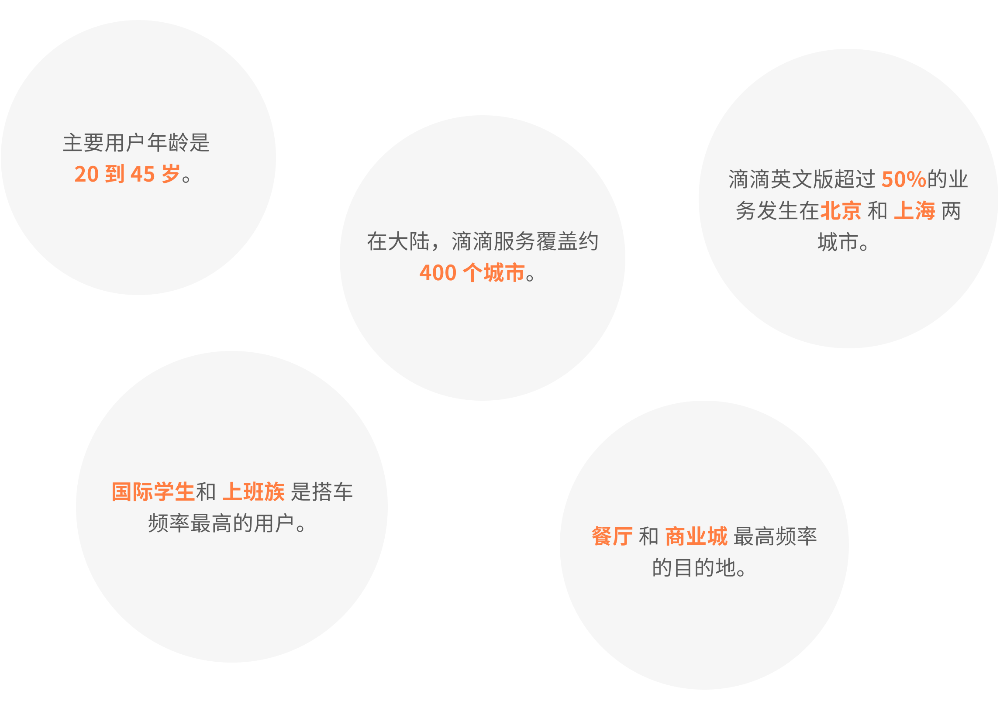
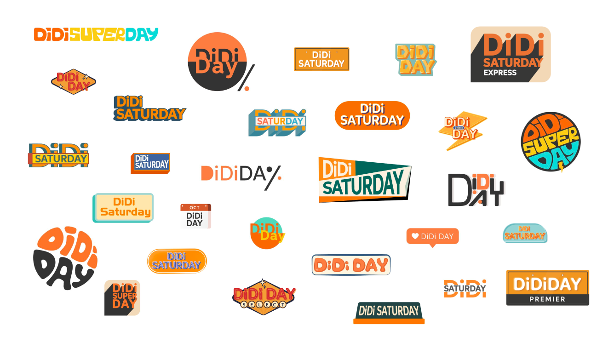
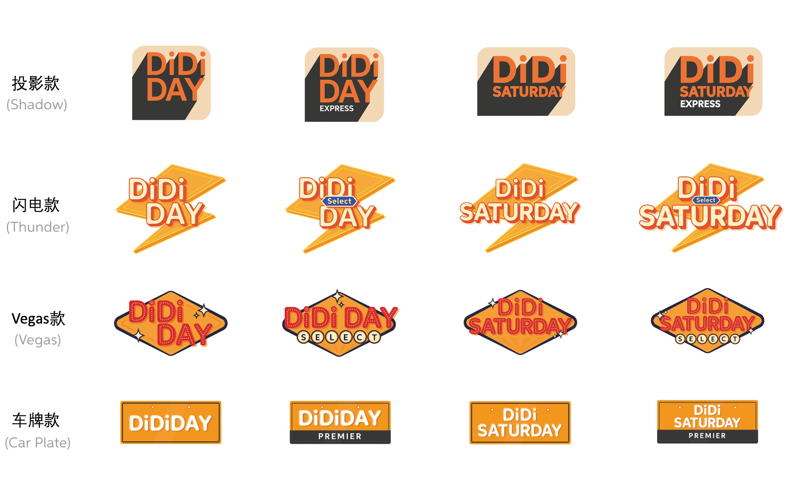
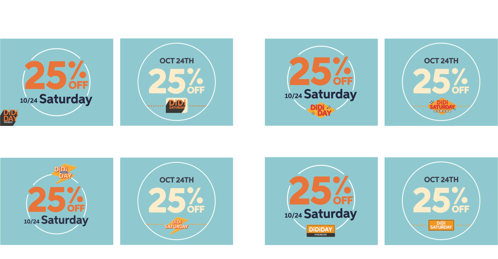
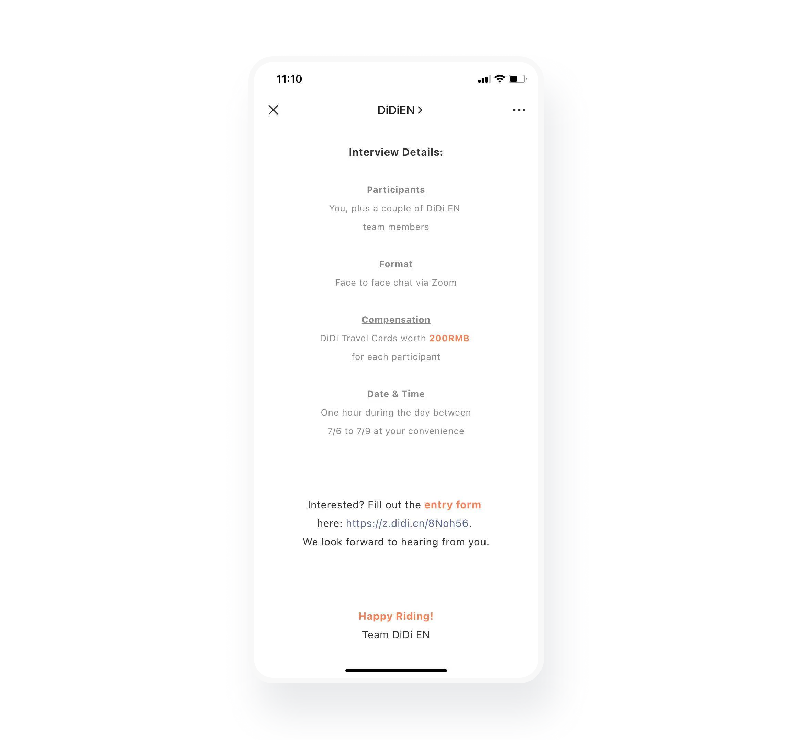
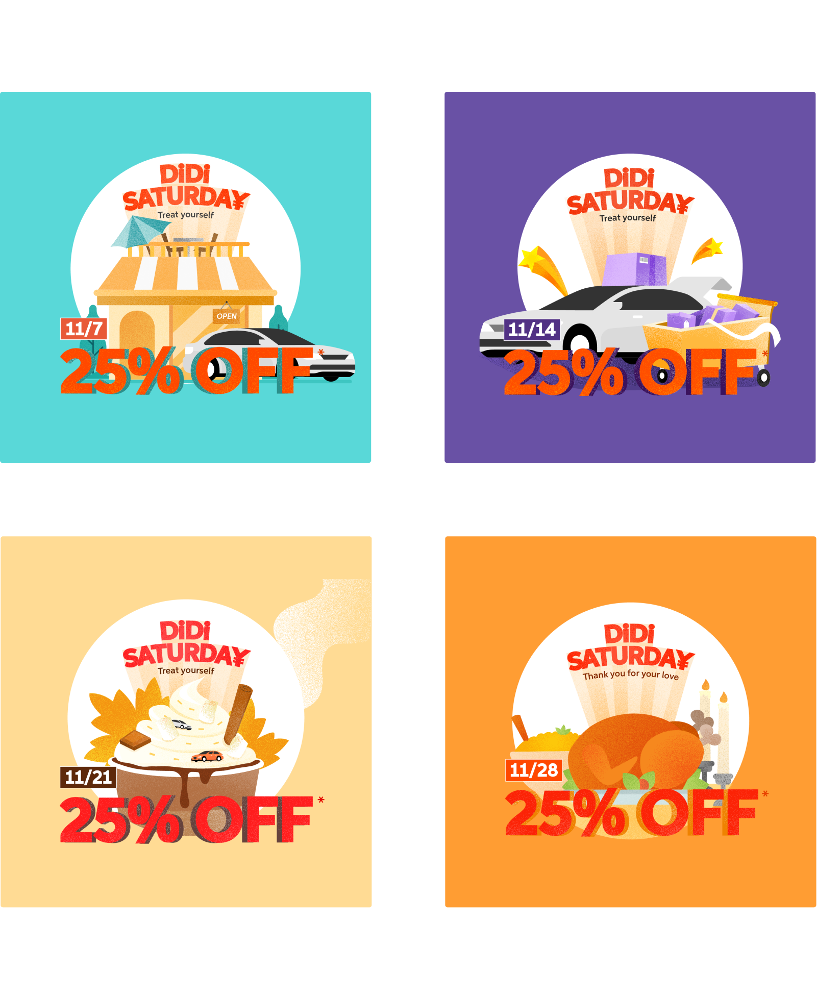
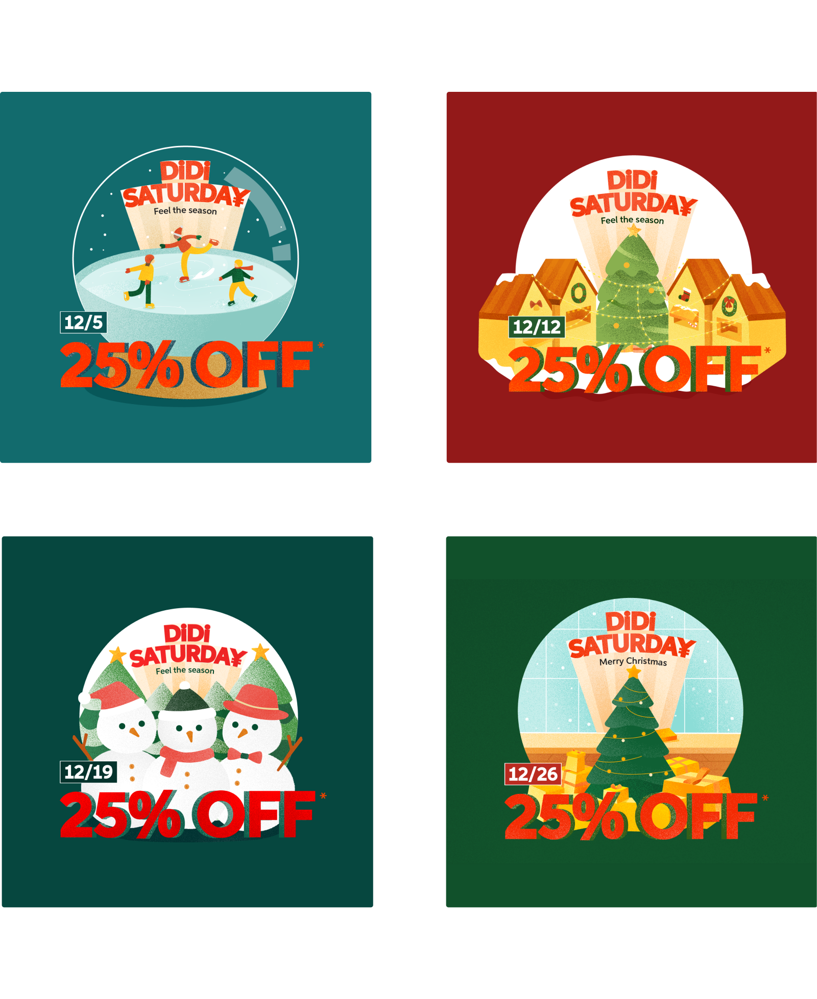

负责
用户调查,
视觉设计
团队
滴滴英文版
时长
4个星期
周六大促日是滴滴英文版全年最大的市场活动，是主要的业务来源之一。每个周六大促日，用户搭乘快车自动享受7-8折优惠。
生活在中国的外国人
宣传大促日以增加业务。
面试目标用户及收集反馈。
设计活动ip及端内曝光 (开屏 / 弹窗 / banner) 和 社交媒体投放 (YouTube 视频广告 / Facebook Ads / 网站).
我从英文版团队得到了以下数据：
通过脑暴会议，活动名字范围缩小到了以下三个：DiDi Day, DiDi Saturday, 和 DiDi Super Day.
我的任务是在1天内尽可能多的设计出不同风格的ip版本。
我和我的leader一共采访了23位目标用户。
为了用户更好的理解ip的呈现方式，我做出了几个排版的草稿。
投影款收获最多积极的评价，很多外国人表示喜欢它的简洁。
最后决定保留的是投影款和vegas款（投票第一第二名）。
为了ip和kv更好的融合，我同时尝试了一些新的ip设计。
到目前为止，项目还处在实验和尝试阶段。我们决定采访一些有设计背景的用户，看是否能得到一些不同的看法和灵感，以及对我的草稿的反馈。
随后我们在滴滴英文版的公众号发出了一篇征集参与者的微信推文，并给出200元的补偿。
我们最后采访了4名报名者（2男2女）。
经过一轮讨论后，我拿出我所做的设计稿。并向参与者强调他们并非我设计的，以获取最直接的反馈。
我之后又尝试了很多不同的风格。很多我并没有保留草稿因为当时的我内心太绝望了。。
直到我设计出这个版本。我的leader表示终于有“眼前一亮“的感觉了。
整个团队对这个版本都比较满意，上级也很快的通过了这个插画风格。
随后我和leader一起想出了四个月分别的主题和文案。
由于是活动推出第一个月，设计上的变化也更大。用户在白天/晚上打开app会看到相应的白天黑夜版本的设计。
因为北京和上海是滴滴英文版50%以上的业务来源地，这两个城市的插画会是当地风景。其他城市则有一个通用的版本。
十月份是国庆长假出游旺季。主题大多围绕出行。
十一月是双11及感恩节，也是黄金秋季。
还有什么比圣诞节更激动人心呢！
我很感谢我的leader让我全面的参与了用户调查的环节，以及引导采访。这是我从未有过的经历。虽然当下听到一些很直白的评语后，我当下有点失落，但这些反馈帮助我更客观的正视和看到我设计里的不足。最让我开心的是我自己可以看到从第一稿到最后一稿的进步。
英文版使我学到最多的是设计背后的逻辑。我曾经觉得视觉设计更多只是美观。英文版使我认识到比美感更重要的是直到每个元素出现的原因和目的，以及信息的突出。其中一个同事告诉我，能让一个设计师突出的是逻辑能力。